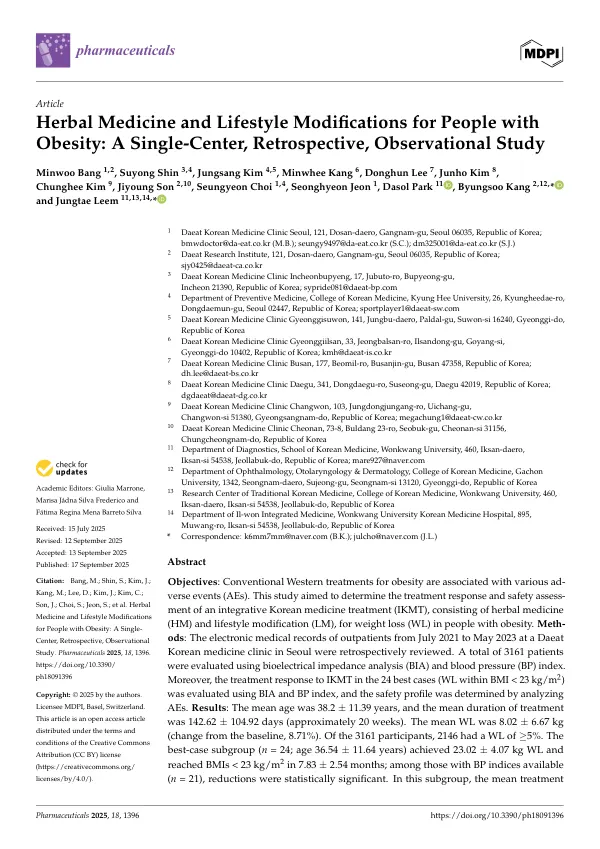

Herbal Medicine and Lifestyle Modifications for People with Obesity: A Single-Center, Retrospective, Observational Study
Bang M, Shin S, Kim J, Kang M, Lee D, Kim J, Kim C, Son J, Choi S, Jeon S, Park D, Kang B, Leem J
Pharmaceuticals 18(9):1396

첫 장 · 오픈액세스First page · open access
논문 소개Summary
비만 치료에 쓰이는 양약은 효과가 있지만 이상반응이 따라옵니다. 한의 진료 현장에서는 한약과 생활습관 교정을 함께 쓰는 방식이 널리 쓰이지만, 실제로 얼마나 빠지고 얼마나 안전한지 진료기록으로 확인한 국내 연구는 없었습니다. 이 연구는 그 기록을 모아 살핀 것입니다.
서울의 한 한의원에서 2021년 7월부터 2023년 5월까지 진료받은 외래 환자 3,161명의 전자의무기록을 후향적으로 검토했습니다. 체성분 분석과 혈압 지표로 평가했습니다. 여기에 더해 체질량지수 23 미만까지 도달한 우수 사례 24명을 따로 뽑아 자세히 살피고 이상반응을 분석했습니다.
전체 평균 나이는 38.2세, 평균 치료 기간은 142.62일(약 20주)이었고 평균 감량은 8.02kg으로 기저 체중의 8.71%였습니다. 3,161명 가운데 2,146명이 5% 이상 감량했습니다. 우수 사례 24명은 평균 23.02kg을 줄여 7.83개월 만에 체질량지수 23 미만에 이르렀고, 혈압 지표를 확인할 수 있었던 21명에서 유의한 감소가 있었습니다.
안전성 쪽이 이 연구에서 눈여겨볼 대목입니다. 우수 사례군의 평균 치료 기간은 8.71개월로 5개월에서 15개월에 걸쳐 있었는데, 이는 마황이 든 한약에 대한 6개월 안전 지침을 넘어서는 기간입니다. 그 기간에도 중대한 이상반응은 관찰되지 않았습니다. 7개월 추적 시점에 11명이 감량을 유의하게 유지하고 있었습니다.
한계는 뚜렷합니다. 한 곳의 진료기록을 되돌아본 연구라 대조군이 없고, 좋은 결과가 나온 24명을 따로 본 부분은 애초에 잘된 사례를 고른 것이므로 일반 환자의 기대치가 아닙니다. 감량을 유지한 11명도 전체에서 보면 일부입니다. 저자들은 전향적 연구로 확인하고 표준 치료 프로토콜을 세워야 한다고 적었습니다.
Conventional drugs for obesity work but bring adverse events. In Korean medicine practice, herbal medicine combined with lifestyle modification is widely used, yet no Korean study had examined from clinical records how much weight is actually lost and how safe the approach is. This study reviewed those records.
Electronic medical records of 3,161 outpatients treated at a Korean medicine clinic in Seoul between July 2021 and May 2023 were reviewed retrospectively, assessed by bioelectrical impedance analysis and blood pressure indices. A subgroup of 24 best cases — those reaching a body mass index below 23 — was examined in detail alongside an analysis of adverse events.
Mean age was 38.2 years and mean treatment duration 142.62 days, about 20 weeks. Mean weight loss was 8.02 kg, or 8.71% of baseline, and 2,146 of the 3,161 patients lost 5% or more. The 24 best cases lost a mean 23.02 kg and reached a body mass index below 23 within 7.83 months; among the 21 with available blood pressure indices, reductions were statistically significant.
Safety is the notable part. Mean treatment duration in the best-case subgroup was 8.71 months, ranging from 5 to 15 — exceeding the six-month safety guideline for herbal medicine containing Ephedrae Herba. No serious adverse events were observed over that period, and at seven-month follow-up 11 patients maintained statistically significant weight loss.
The limitations are clear. This is a retrospective review at a single clinic without a control group, and the 24-case subgroup was selected precisely because it did well, so it is not what a typical patient should expect. The 11 who maintained their loss are likewise a fraction of the whole. The authors call for prospective studies to confirm the findings and to establish standardised treatment protocols.
인용Cite
Bang M, Shin S, Kim J, Kang M, Lee D, Kim J, Kim C, Son J, Choi S, Jeon S, Park D, Kang B, Leem J. Herbal Medicine and Lifestyle Modifications for People with Obesity: A Single-Center, Retrospective, Observational Study. Pharmaceuticals. 2025;18(9):1396. doi:10.3390/ph18091396